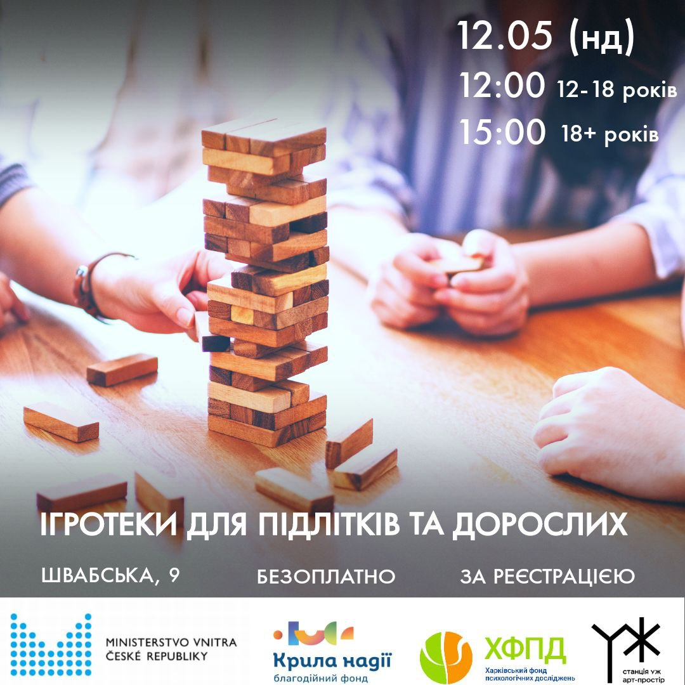
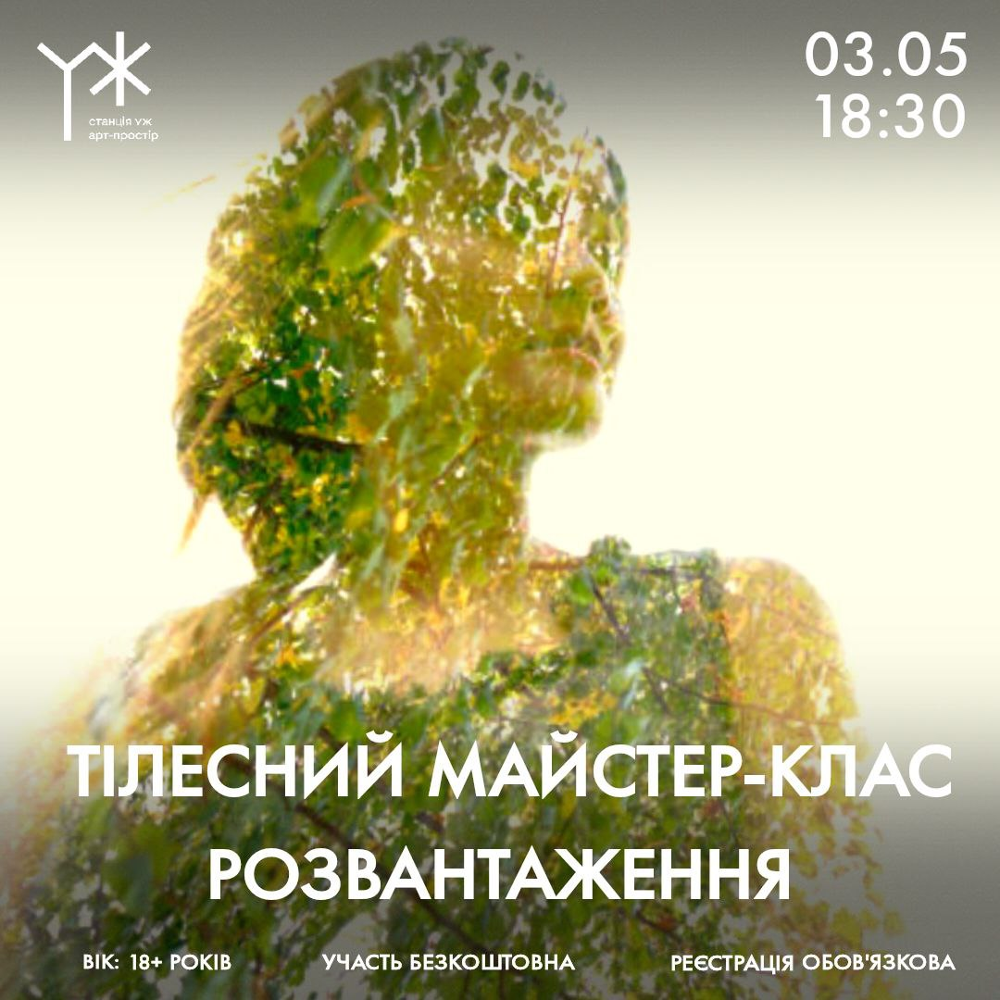

Як сказано раніше, це арт-простір, отже тут ви необмежені чимось одним. Ось перелік активностей, які регулярно у нас проводяться
Це театр імпровізацій, у якому глядачі розповідають особисті історії, а актори втілюють сказане на сцені, використовуючи форми. Цими формами можуть бути метафори, рух, голос, їхні поєднання. У результаті виходить цікава та унікальна картина, суть якої у передачі як явних, так і прихованих емоцій оповідача. Якщо той, хто довірив акторам свою історію, каже:"Дякую, актори, це моя історія", то вони виконали свою роль. Якщо цього не сталося, за допомогою спеціальних форм актори додають того, чого оповідачу не вистачило у цій історії. Вже існують декілька підліткових груп та одна доросла, отож цей напрямок відкритий і постійно розширяється для бажаючих.

Тут, мабуть, усі здогадалися про що йде мова. Під час цього заходу у нашому просторі збираються люди 12-18 років і старше, в залежності від часу проведення, для приємних партій в улюблені настільні ігри, як відомих, наприклад "Мафія", так і відносно нових, як "Dungeons and dragons" або "Коса". Це зовсім не весь перелік, детальніше ви зможете дізнатись власними силами.
Основна ідея зустрічі — відпочити, зануритись у музику та відчути цілющу силу співів Разом будемо співати щиро від душі, щоб почути свій голос, як зовнішній, так і внутрішній

Тілесний майстер-клас, який ми проводимо, зазвичай має ціль переключити увагу від присутності в роздумах на те, що відбувається з тілом, заземлитись та переключити увагу на даний момент Набір вправ може відрізнятися, але загальна структура трохи схожа, це 3 години, де перші 1.5 години це знайомство, більш рухливі та мовленнєві вправи та ігрові практики з акторської майстерності, ціль яких - пробудова довіри та можливість згадати, як це розважатись, як діти Друга частина - це вправи та практики, які націлені на заземлення, стишення через більш стабілізуючи вправи з тілесної терапії та майндфулнесу